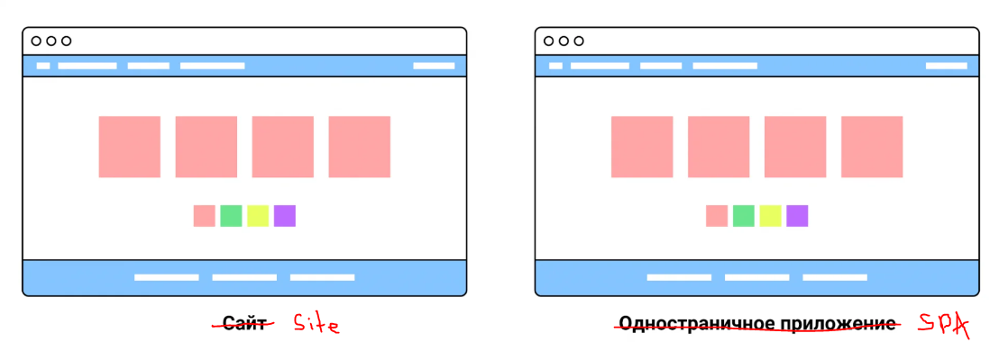
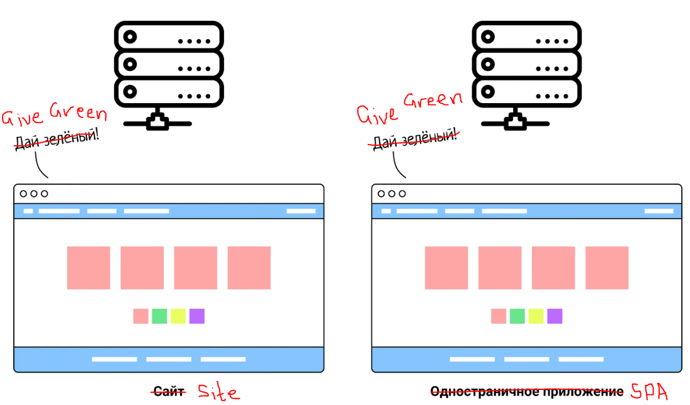

Created by VLADISLAV REUT
Presentation Plan
A Single Page Application (SPA) – is a web application that loads just one HTML page and continually updates its setup without requiring a full page reload when the user switches on.
It includes the following main components:
Let's say you have a service where users look at colored squares. The interface has buttons with colors that you can color the shapes with. You have created both a static website and a single-page application for the service:
At first glance, there is no difference between the site and the application. To notice it, click on the button with a different color.
Here it becomes noticeable that the site and the single-page application behave differently:
The entire site page will be updated. It turns out that we are telling the server: “Hey, make the squares green.” He says: “Okay. But here you have the site header and footer again, as well as buttons and metadata.” And it returns an entirely new HTML file.
In a single page app, only the color of the squares will update. The browser sends a request to the server, it returns the required parameter, the squares are colored, everything else remains unchanged.
Now imagine that you have not simple squares, but an online store. The user moves from one product to another, but the page does not reload, but dynamically updates the photo, name, description and price. This is how spas work.
IMPLEMENTATION OPTIONS
There are many frameworks for working with SPA - these are Angular and Vue.js, and Ember.js, and Svelte, but as we can see from the graphics, REACT is the most popular.